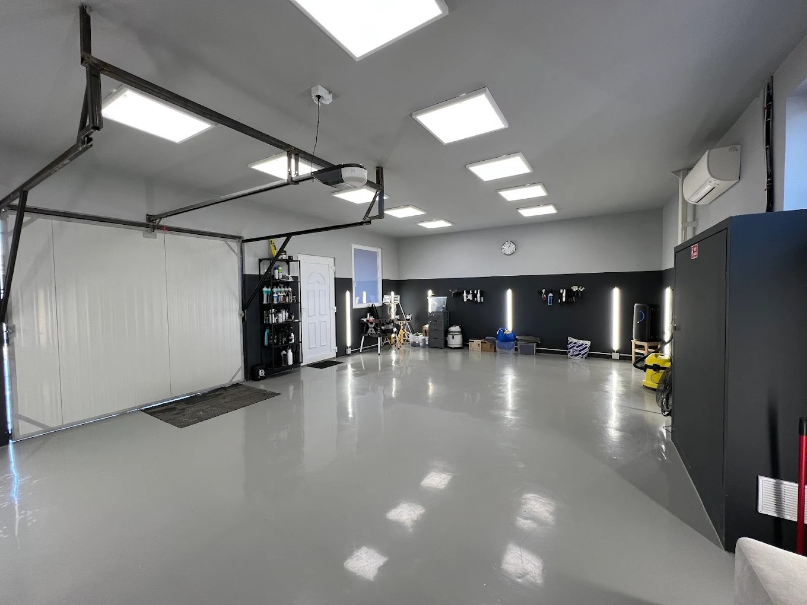
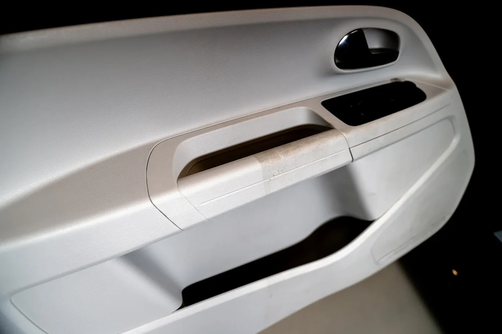
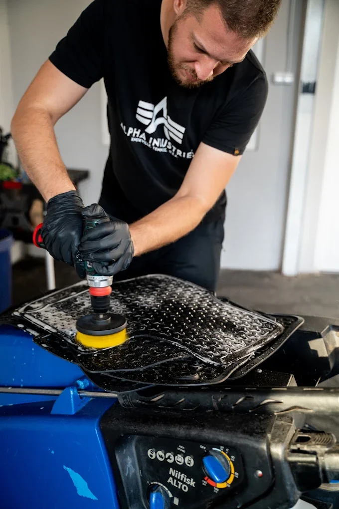

Autókozmetika és fényezésvédelem
Ragyogó autó, előre tudott áron
Kézi mosás, kárpittisztítás, polírozás és kerámia bevonat zárt, klímás műhelyben. Foglalj online két perc alatt, és rögtön látod a várható árat. Mosás 7 900 Ft-tól.
Ár a munka előtt
Átvételkor megnézzük az autót, és csak a megbeszélt árért dolgozunk.
Nincs előleg
A helyszínen fizetsz, készpénzzel vagy kártyával, amikor elviszed.
Zárt, klímás műhely
Nem az udvaron mosunk: eső, por és napsütés nem számít.
Átadás LED-fényben
Együtt nézzük át az autót, mielőtt hazaviszed.
Szolgáltatások és árak
Válaszd ki, mit kérsz. Kisautó árak. Kattints a kártyára, és már foglalhatsz is.


Így működik
Három lépés, két perc. Nem kell telefonálnod, és nem kell előre fizetned.
Válassz munkát és időpontot
A foglalóban látod a szabad napokat és rögtön a várható árat is.
Hozd el az autót
Átvételkor megnézzük együtt, és munka előtt megmondjuk a végleges árat.
Vidd el ragyogva
Szólunk, ha kész. Átadáskor LED-fényben együtt nézzük át.
Szabad időpontok a következő három hétre.
Előtte – utána
Nézd meg a különbséget. Húzd el a csúszkát a képen.

ElőtteUtána Bemutató: az „előtte” oldal itt csak illusztráció. Ide kerülnek a saját előtte–utána képpáraitok.Ilyen eredményt szeretnél? Foglalj időpontot két perc alatt.

Miért fontos a fény
A napon minden autó fényesnek látszik. Mi oldalfényben dolgozunk, így ha a polírozás után maradt egy hologram, azt nem te veszed észre egy hét múlva, hanem mi még a műhelyben.
Munka közben
Kárpit, szőnyeg, ajtók. A részletek, amikért visszajönnek hozzánk.


Kérdések
Mielőtt foglalsz
A négy kérdés, amit a legtöbben feltesznek.
Mennyibe fog kerülni pontosan?
A foglalóban az autó mérete alapján rögtön látod a várható árat. A végleges összeget átvételkor, még a munka előtt mondjuk meg, utólag nincs meglepetés.
Kell előre fizetnem?
Nem. Előleg nincs, a helyszínen fizetsz, amikor elviszed az autót.
Meddig tart?
Egy mosás kb. 1 óra, egy belső takarítás 2–3 óra, a polírozás egy teljes nap. Foglaláskor minden munkánál látod az időt.
Mi van, ha közbejön valami?
Válaszolj a visszaigazoló e-mailre, és lemondjuk vagy áttesszük az időpontot.